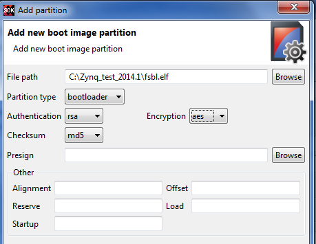

The Add Partition window contains the following settings:
Setting |
Description |
|---|---|
Partition Type |
Select the partition type:
|
File Path |
The path to the partition file. |
Authentication |
Select from the drop down menu, if authentication needs to be made applicable to this partition.
|
Encryption |
Select from the drop down menu, if encryption needs to be made applicable to this partition.
|
Checksum |
Select from the drop down menu, if checksum needs to be made applicable to this partition. md5: enables md5 checksum for this partition. none: disables the checksum for this partition. |
Presign |
When SSK authentication is not given in the main menu, user needs to make sure that presign file, which is nothing but presigned partition signature is specified. This field is enabled only when authentication is enabled. |
Alignment |
Sets the byte alignment of the package. Cannot be used with Offset. The partition will be padded to be aligned to a multiple of this value. |
Offset |
Sets the absolute offset of the package in the boot image. Cannot be used with Alignment. |
Reserve |
Reserves a total amount of memory for this partition. The partition will be padded to this amount. |
Load |
Sets the load address for the partition, such as where it will be written to. |
Startup |
Sets the entry address for the partition, after it is loaded. This is ignored for partitions that don’t execute. |